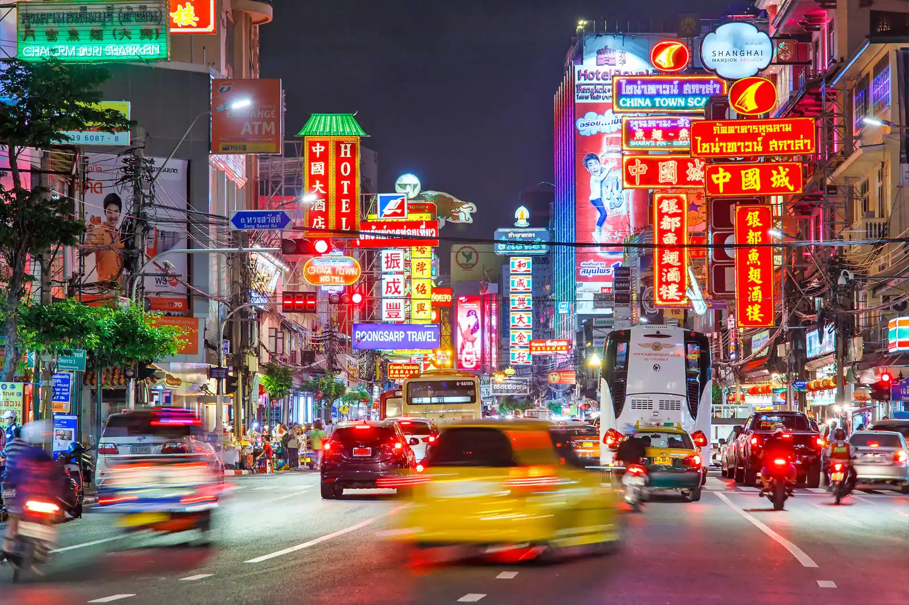

For major tourist attractions in Bangkok, most of them are Historical sites or religious sites such as temples in Bangkok. There is beautiful architecture, wall painting and also important in History, such as Wat Phra Sri Rattanasamaram (Phra Kaew), Wat Phra Chetuphon Wimon Mangalaram (wat pho), wat arun Ratchawararam, Wat Sra Ket, and Phra Bor Banphot (Golden mountain), Wat Ratchanadda, Wat Traimit, Wat Benchamabophit, Wat Bowonniwet Vihara Suthasan, Wat Thep Wararam etc.
There are also other interesting places such as palaces, museums, parks, as well as various Shopping centres in Bangkok. There are both chilling places like Chatuchak Weekend Market, Sampeng Market, Yaowarat and Phahurat night market or luxury level such as many leading department stores in all areas of Bangkok as well.
Explore the grand palace üè∞ü§¥üïå |
See the floating market ‚õµü•§ü•óüçî |
|
The Grand Palace was built under the rule of King Rama. The three-year construction was complete in 1785. It was then that the capital of Thailand was moved to Bangkok, from Thonburi. From many parts of the city, you can enjoy a dazzling view of the palace, with its enormous complex of temples, statues and bell-shaped towers on full display. As you approach the Grand Palace, much of that is covered by the thick walls that envelope it. But upon entering you’ll be amazed by the sheer scale of the palace, its ornate architecture, gilded woodwork and the mix of red, white and gold. One of the highlights of Grand Palace is What Phra Kaew. This is where you’ll find the memorable emerald statue of Buddha. Like all temples and sacred places in Thailand, you should dress modestly with shoulders and knees covered. |
Seeing the floating markets is a vibrant, colorful and aromatic experience. Many travelers choose to venture 62 miles (100km) from Bangkok to the bustling Damnoen Saduak. But you can stay local and avoid the tourist trap by making your way to Khlong Lat Mayom or Taling Chan floating market. At either market, you will discover how these unique markets came to be. With so many people living along the river, getting about on boat made the most sense. The advent of the canals only increased this, and the floating markets quickly became a part of local life. If you had to pick one of the two local markets, you can’t go wrong with Taling Chan. Although small, the lack of cheap souvenirs confirms its authenticity, and it’s one of the best places in Bangkok to enjoy street food. |